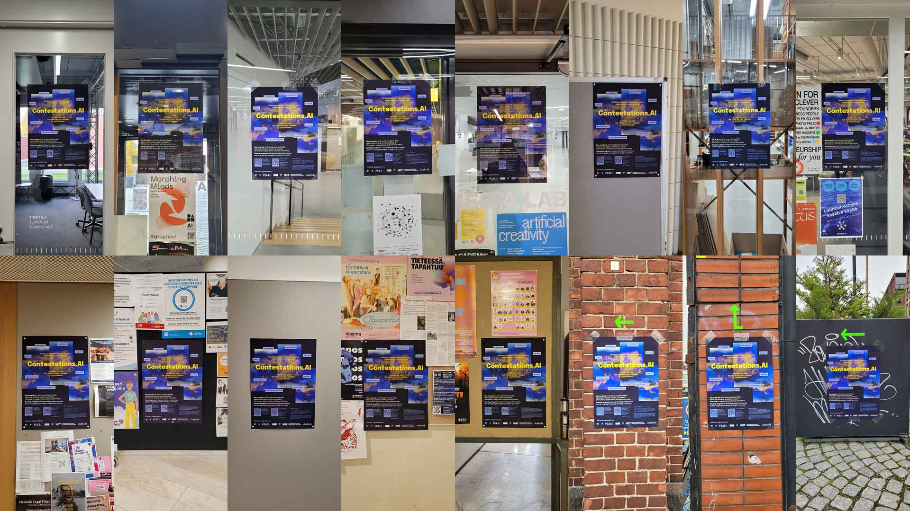
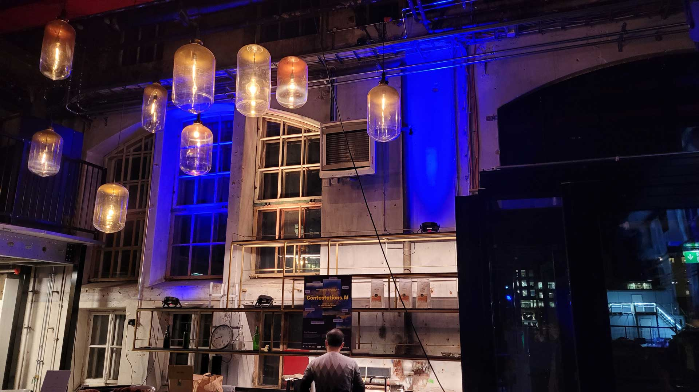
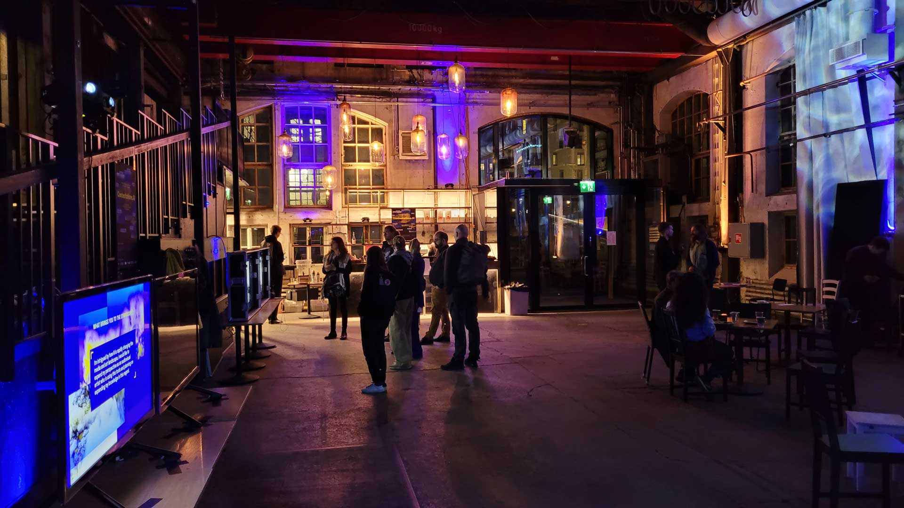

Contestations.AI
Volunteer Work
2024
Posters, AV setup & lighting design, volunteer coordination, and clean-up
Contestations.AI was a transdisciplinary symposium on
AI, Human Rights,
and Warfare, held on 23 October, 2024, at Vallilan Kansallisteatteri, Helsinki. The symposium included over 35
speakers, artists, and art performances about Artificial Intelligence (AI), Big Data analytics, and Automated
Decision Making (ADM) used for surveillance, targeting, and autonomous drone warfare, in addition to
proliferating misinformation on social media during war and conflicts.
I participated as a volunteer from 17–24 October. It was a great and insightful experience to lend a
hand in many different areas and contribute to the event's success. My tasks included help with printing,
cutting, and hanging posters, AV setup & lighting design, and volunteer coordination, as well as clean-up
before, during, and after the event.
Posters
I helped with printing and cutting 40 A2-sized posters and hanging them at the school of Arts, Design, and
Architecture at
Aalto University, at the campus of the University of Helsinki, and around the location of the event venue in
Vallila, Helsinki.
Poster Design: Aurora Navarro Villacampa

AV Setup & Lighting Design
In the entrance hall, we installed spotlights that illuminate the walls of the old factory hall. I chose blue and yellow tones to match the brand identity of the event. I placed the spotlights above the bar and directed them towards the windows so that they would attract attention from outside as well.

